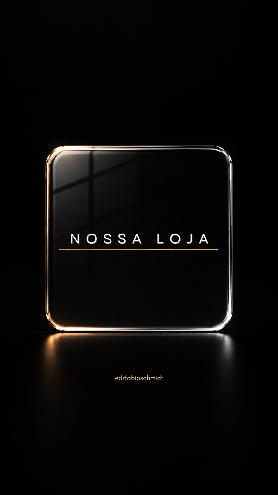
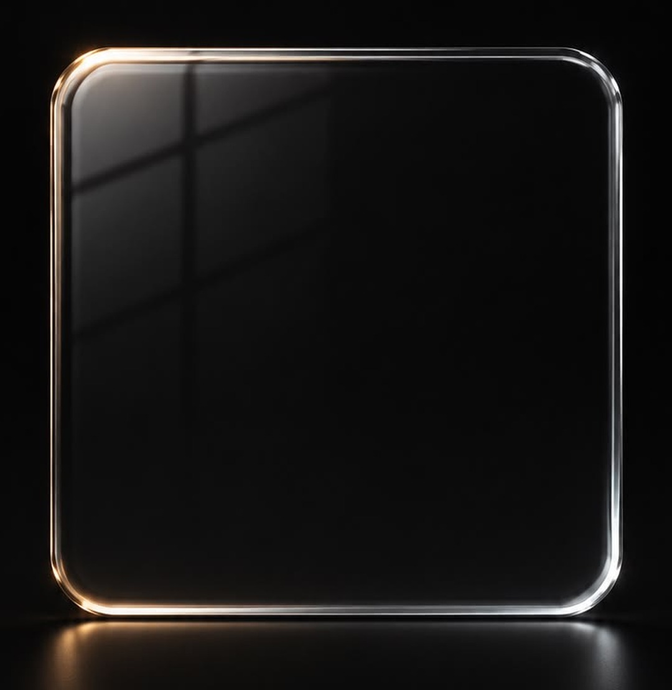
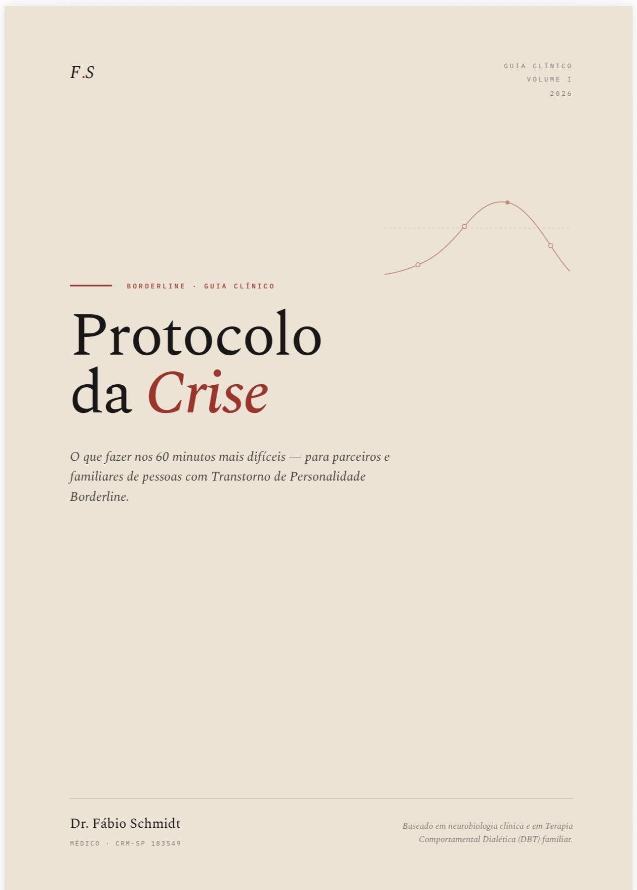
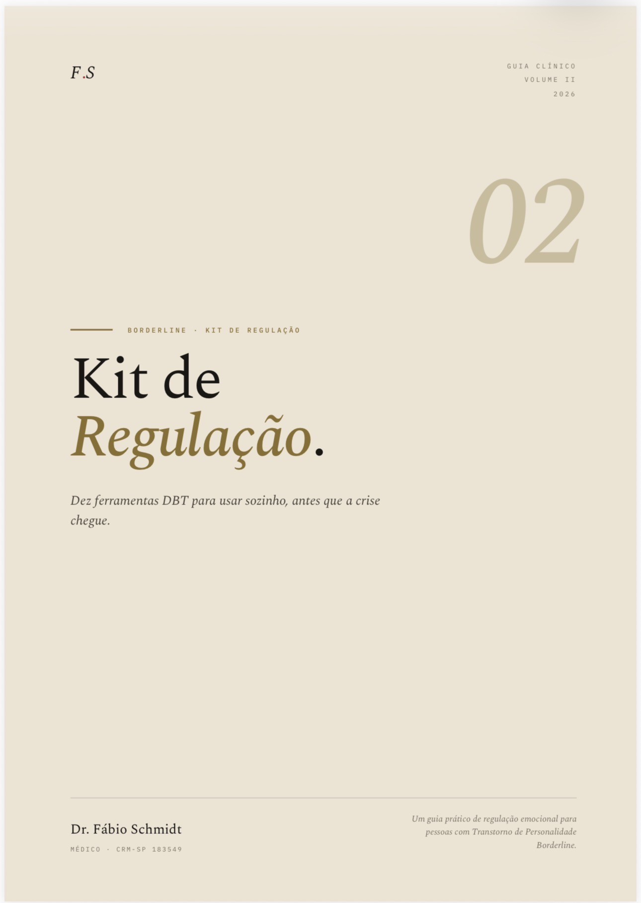

Borderline sem estigma
Borderline sem estigma


Guia clínico · volume I
Protocolo da
Crise
O que fazer nos 60 minutos mais difíceis. Para parceiros e familiares.
R$ 27
Borderline sem estigma

Guia clínico · volume II
Kit de
Regulação
Dez ferramentas para usar sozinho, antes que a crise chegue. Para quem tem borderline.
R$ 27
Borderline sem estigma
Na loja tem
também
Protocolo 7 Dias
para quem convive
R$ 219
Quem sofre não escolhe como gritar
livro, 160 páginas
R$ 69
Borderline sem estigma
drfabioschmidt.net/loja
Toque no link
@drfabioschmidt